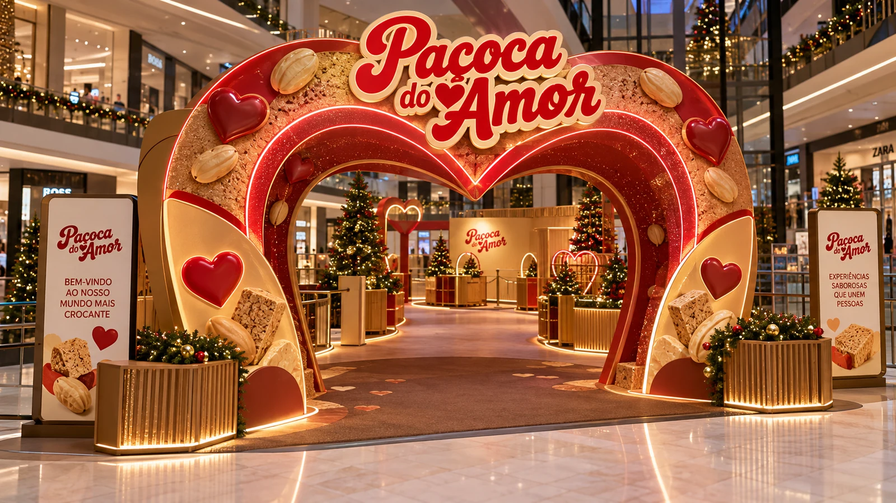
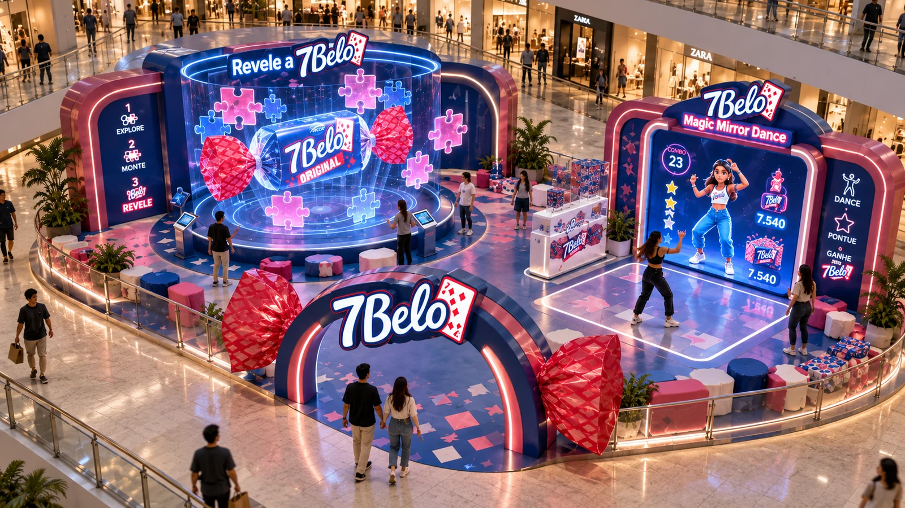
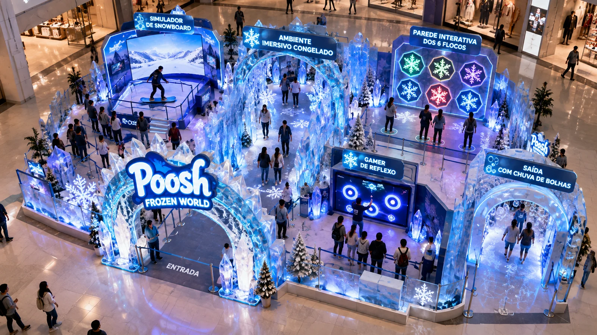
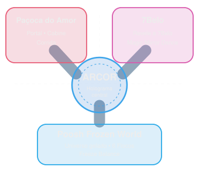

SABORES QUE
VIRAM ESPAÇO.
Três mundos.
Um Natal
inesquecível.
O Doce Multiverso é uma experiência natalina imersiva onde os sabores e memórias afetivas da ARCOR ganham vida por meio da arquitetura cenográfica, tecnologia física e digital, diversão interativa e imaginação.
Projetado para o vão central de um shopping center, o espaço transforma Paçoca do Amor, 7Belo e Poosh! em três universos tangíveis que convidam crianças, jovens e famílias a explorar atrações sensoriais, desafios mecânicos e registros memoráveis.



02 / ARQUITETURA & IMPLANTAÇÃO
O MAPA DO
MULTIVERSO.
Projetado com circulação radial intuitiva e acessibilidade plena. No epicentro, um grande Holograma Central conecta os três mundos temáticos com experiências contínuas.

Paçoca do Amor
Portal do Amor com LED em coração, Pista de Corrida Interativa com rastro luminoso, Torre de Amendoins e Laboratório Holográfico.
Conhecer Atrações →7Belo
Revele a 7Belo (puzzle 3D capacitivo), Magic Mirror Dance com tracking corporal MediaPipe, totem neon e chuva de balas virtuais.
Conhecer Atrações →Poosh! Frozen World
Parede dos 6 Flocos de Neve (jogo de reflexo), Simulador Snowboard Freeze Balance com ventiladores de vento frio e saída com bolhas aromáticas.
Conhecer Atrações →Holograma ARCOR
Totem prismático com ilusão holográfica Pepper's Ghost que sincroniza iluminação e convida os visitantes para cada setor.
PONTO DE CONEXÃOCIRCULAÇÃO ACESSÍVEL (NBR 9050) COM RAMPAS SUAVES, PISO ANTIDERRAPANTE E ESPAÇO AMPLO PARA CARRINHOS E CADEIRANTES
PAÇOCA
DO AMOR.
Quando o amor e o afeto
ganham forma no Natal.
Uma jornada sensorial
feita de união
e memórias doces.
O universo Paçoca do Amor traduz o espírito natalino de acolhimento e afeto. Elementos em madeira clara, paleta quente e o aroma característico do amendoim torrado transportam o visitante para uma atmosfera envolvente.
A arquitetura foi concebida para unir famílias através de atrações lúdicas e tecnológicas: desde o portal de boas-vindas com iluminação interativa até uma pista de corrida gamificada onde o rastro dos passos acende um coração gigante.
Atrações Interativas do Universo
Portal do Amor
Arco imponente com fitas de LED endereçáveis e microcontrolador ESP32. Sensores infravermelhos detectam a chegada do visitante e acendem uma sequência de luzes douradas em formato de coração.
Pista de Corrida Interativa
Piso interativo com sensores de pressão. Conforme os competidores correm, deixam um rastro digital de paçoca até a linha de chegada, onde um coração luminoso de 1 metro vibra e celebra a vitória.
Torre do Amor & Mini Fábrica
Monumento em resina transparente com amendoins suspensos e engrenagens decorativas que demonstram de forma mágica a moagem e prensagem da paçoca artesanal.
Laboratório Holográfico
Ilusão de Pepper's Ghost com projeção tridimensional de receitas natalinas flutuantes, combinando tecnologia e tradição em um espetáculo visual.
Simulador do Portal & Pista do Amor
Teste o ciclo tecnológico dos sensores e acionamento de luzes em tempo real:
Aguardando interação: aproxime-se do portal para iniciar a detecção dos sensores.
7BELO
DIVERSÃO
NEON &
MOVIMENTO.
E RITMO
NATALINO! ↗
O universo 7Belo é uma explosão de vitalidade, pop art e diversão para todas as idades. As cores magenta, ciano e amarelo criam um cenário elétrico onde as tradicionais balas de framboesa ganham proporções monumentais.
O mascote
guia a dança.
A tecnologia aqui se conecta ao ritmo corporal: através de visão computacional com IA (MediaPipe), o visitante dança em frente ao espelho mágico, acumula multiplicadores de pontuação e dispara chuvas de doces virtuais.
Atrações Interativas do Universo
7Belo Magic Mirror Dance
Espelho inteligente equipado com câmera HD e algoritmo MediaPipe. Rastreia 33 pontos corporais em tempo real, avalia passos natalinos e concede combos e feedback luminoso dinâmico.
Revele a 7Belo (Puzzle 3D)
Totem holográfico onde enigmas táteis com sensores capacitivos desafiam o raciocínio rápido. Ao resolver o quebra-cabeça, uma explosão de cores e doces holográficos celebra a conquista.
Quiosque Neon Instagramável
Espaço cenográfico com arcos de neon vibrante, pirulitos gigantes e o mascote de carta para registros fotográficos inesquecíveis em família.
Chuva de Balas Virtuais
Projeção mapeada que reage aos movimentos dos dançarinos, cobrindo o chão com balas 7Belo digitais que ricocheteiam a cada pisada.
Simulador 7Belo Magic Mirror Dance
Execute os passos no ritmo para aumentar seu multiplicador de Combo e liberar a Chuva de Balas:
Clique nos passos na ordem para sincronizar o avatar e disparar a chuva de balas virtuais!
POOSH!
FROZEN
WORLD.
O inverno radical encontra a explosão de sabor.
Uma experiência sensorial congelada que acende a adrenalina.
O neon desenha as estalactites de gelo e transforma o frio em pura energia natalina.
EXPLORE OS ELEMENTOS MULTISSENSORIAIS DO CONCEITO
O Poosh! Frozen World transporta o público para um cenário de geleiras estilizadas, estalactites cristalinas e o icônico Natal do Noel Radical. Uma cenografia futurista com luzes ciano e magenta cria a sensação de entrar dentro do recheio líquido gelado de uma goma Poosh!.
O circuito desafia os reflexos e equilíbrio dos visitantes em estações interativas integradas com ventiladores industriais de vento frio, sensores giroscópicos em pranchas mecânicas e saída com chuva de bolhas aromáticas de menta e frutas.
Atrações Interativas do Universo
Parede dos 6 Flocos de Neve
Desafio de reflexo com 6 botões gigantes em policarbonato retroiluminado. 30 segundos cronometrados com 3 níveis de dificuldade (Fácil - Verde, Médio - Vermelho, Difícil - Roxo) e placar dinâmico.
Simulador Snowboard (Freeze Balance)
Prancha articulada sobre molas industriais e sensor inercial MPU-6050. Ventiladores de velocidade modulada sopram vento frio conforme o visitante se equilibra em uma descida virtual por montanhas de gelo.
Túnel de Entrada Cristalino
Passagem sensorial com estalactites translúcidas, piso acústico que estala como neve fresca e máquina geradora de flocos de neve cenográficos não tóxicos.
Saída com Chuva de Bolhas Aromáticas
Túnel de saída onde canhões automatizados disparam bolhas de sabão aromatizadas com essência de hortelã e tutti-frutti, selando a memória olfativa da visita.
Simulador da Parede dos 6 Flocos de Neve
Selecione a dificuldade e clique nos flocos de neve que acenderem antes que o tempo acabe!
Clique em "Iniciar Rodada" para testar seus reflexos na Parede de Flocos!
FÍSICO
DIGITAL
A tecnologia
como ponte para
o encantamento.
O Doce Multiverso foi estruturado com uma arquitetura de sistemas distribuída e robusta, projetada especificamente para o ritmo operacional intenso de um grande shopping center.
Sob a liderança técnica de Marco Antônio, as instalações operam em um ciclo contínuo de 4 etapas que une microcontroladores de borda, sensores inerciais e algoritmos de visão computacional em baixa latência.
Ciclo Tecnológico das Instalações
Detecção
Sensores infravermelhos de barreira, botões táteis capacitivos industriais, acelerômetro/giroscópio MPU-6050 na prancha e câmeras de visão computacional em 60 FPS.
Interpretação
Controladores ESP32 em rede local dedicada, mini PCs com processamento MediaPipe para rastreamento esquelético e game engine de resposta ultra-rápida (<35ms).
Execução
Acionamento de fitas LED WS2812B endereçáveis, telas 4K HDR, ventiladores industriais com modulação PWM e relés de estado sólido para bolhas e névoa.
Feedback
Scoreboards sincronizados em tempo real, iluminação comemorativa, efeitos sonoros binaurais e celebração mágica que premia o visitante.
Segurança Elétrica (NBR 5410)
Tensão de trabalho reduzida (12V/24V SELV) nas áreas de contato direto com visitantes. Proteção por disjuntores diferenciais DR, fiações antichamas e botões físicos de emergência em cada atração.
Acessibilidade Universal (NBR 9050)
Rampas suaves de acesso com piso antiderrapante, painéis de controle em alturas acessíveis para cadeirantes e crianças, além de contrastes luminosos para pessoas com baixa visão.
Operação Contínua em Shopping
Equipamentos industriais certificados para 12 horas diárias contínuas de operação, com dissipação térmica ativa, redundância de alimentação e facilidade de higienização rápida.
06 / GALERIA DE RENDERS
EXPLORE
CADA DETALHE.
Coleção completa dos renders conceituais e arquitetônicos em alta resolução do Doce Multiverso.
CLIQUE EM QUALQUER IMAGEM PARA AMPLIAR EM TELA CHEIA ↗
O Natal
onde os doces
ganham vida.
OS CRIADORES
DO MULTIVERSO.
Projeto desenvolvido com dedicação, integração técnica e paixão pelo design de experiências e tecnologia criativa.
Lucce
Idealização da narrativa sensorial, ambientação cenográfica e estudo de fluxos e encantamento do público.
Milo
Concepção volumétrica tridimensional, texturização digital e modelagem dos universos espaciais.
Gustavo
Composição de cores, semiótica visual das marcas ARCOR e design dos elementos gráficos do parque.
Guilherme
Estruturação da jornada do visitante, dinâmicas de engajamento familiar e roteirização das atrações.
Marco Antônio
Arquitetura de sistemas físicos e digitais, programação dos simuladores, integração ESP32/sensores e conformidade com normas técnicas de segurança e acessibilidade.
TRÊS MUNDOS. UM NATAL INESQUECÍVEL.
SABORES QUE
UNEM PESSOAS.
EXPERIÊNCIA
ARCOR.
O Doce Multiverso une a doçura tradicional do Natal à inovação tecnológica dos parques temáticos modernos. Um projeto feito para inspirar, conectar e criar memórias duradouras para todas as gerações.
Explorar Novamente